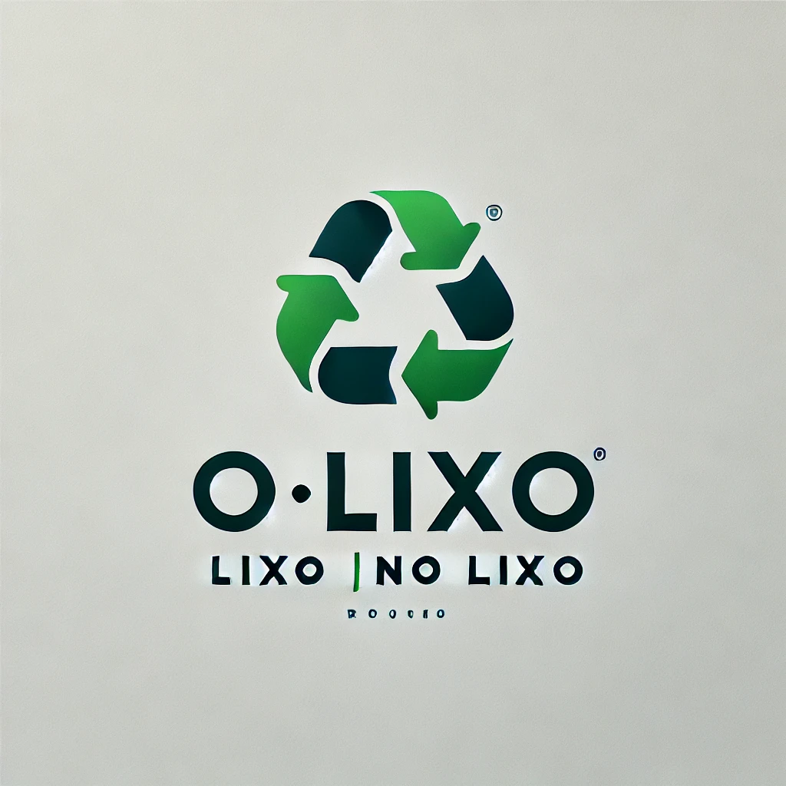

Bem-vindo ao OLixo.org – EcoNotícias!

Transformando resíduos em oportunidades!
Últimas notícias sobre sustentabilidade
National Geographic
MUNDO NATGEO
Descoberta-chave: cientistas identificam o “homem dragão”, um outro tipo de humano pré-histórico
EcoDebate
Crise climática já reduz a produção agrícola global e agrava insegurança alimentar
Territórios Indígenas são essenciais para mitigação climática
Entre em ação pela Amazônia
Diga NÃO ao PL da Devastação
Respeitem a Amazônia
Brasil
Sem resultados
Lista de periódicos
Semil discute Plano Paulista de Energia para a próxima década
Contorno Sul da Tamoios fortalece a competitividade do Porto de São Sebastião
Semil entrega embarcação modernizada para a Travessia Santos/Guarujá
Portal Embrapa
LínguaLíngua
Duas novas cultivares de laranja-doce chegam ao mercado
Autenticação
Secretaria de Estado do Meio Ambiente do Distrito Federal
Barra de busca
Valorizar, Transformar eNutrir
Nossas Soluções
Reciclagem de Efluentes Industriais e Chorume
Composta Santos
AGRICULTURA URBANA
HORTASCOMUNITÁRIAS
Prefeitura de Boa Vista impulsiona gestão sustentável com Ecopontos e Centro de Compostagem
Com papel fundamental na gestão de resíduos, os equipamentos promovem a reciclagem e reaproveitamento
15/05/2025 - Última atualização 15/05/2025
SOBRE NÓS
Missão
Visão
Nossa história e nossos sonhos
Um modelo inovador de coleta seletiva e reciclagem
O que falam da gente
Conexão Planeta
Elefante Jamba morre, aos 29 anos, no Zoológico de BH e seu corpo será empalhado para integrar exposição
Resgatada com apenas dois meses, depois de perder mãe e irmão, filhote de urso recebe cuidados para poder voltar à natureza
O que buscamos:
Como buscamos:
A quem buscamos: